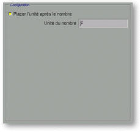
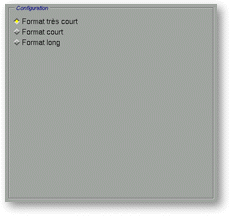

<!-- Documentation XQuad (c)1995-2000 AXENE contact axene@axene.org>
<html>

<head>
<title>Mise en forme des nombres: Unités, Textes et Styles.</title>
</head>

<body BGCOLOR="#FFFFFF" BACKGROUND="Images/back.gif" TEXT="#000000">
<a NAME="box_numfmt_unitstyletext">

<p ALIGN="right"> </p>

<p align="center"><br>
</a><a NAME="bnf_unit"></p>

<h2 align="center">Configuration des unités</h2>
</a>

<p>Quand le format de nombres sélectionné est du type <i>&quot;Unités&quot;</i>, <i>&quot;Scientifiques&quot;</i>
ou <i>&quot;Fractions&quot;</i>, la barre horizontale en haut de la partie droite de la
boîte contient le bouton <i>&quot;Unités&quot;</i>. Lorsque l'on sélectionne ce bouton,
la section <i>&quot;Configuration&quot;</i> prend la forme suivante&nbsp;: </p>

<p align="center"> <br>
<small><i>Photo d'écran de la section &quot;Configuration&quot;. </i></small></p>

<p>Cette section est composée de haut en bas par&nbsp;: 

<ul>
  <li><a NAME="button_unit">le bouton <i>&quot;Placer l'unité après le nombre&quot;</i>
    permet de <b>choisir le placement du symbole unité par rapport au nombre</b>. Si ce
    bouton est enfoncé, le symbole unité est placé après le nombre (<tt>'354 F'</tt>, par
    exemple) ; dans le cas contraire, l'unité est placée avant (<tt>'$ 354'</tt>, par
    exemple). </a><br>
    &nbsp;</li>
  <li><a NAME="textfield_unit">le champ texte <i>&quot;Unité du nombre&quot;</i> permet de <b>choisir
    le symbole de l'unité</b>. On peut mettre jusqu'à 30 caractères pour le nom de
    l'unité. </a></li>
</ul>

<p><br>
<br>
</p>

<hr>

<p><br>
</p>
<a NAME="bnf_text">

<h2 align="center">Configuration des textes </a></h2>

<p>Quand le format de nombres sélectionné est du type <i>&quot;Booléens&quot;</i>, la
barre horizontale en haut de la partie droite de la boîte contient le bouton <i>&quot;Texte&quot;</i>.
Lorsque l'on sélectionne ce bouton, la section <i>&quot;Configuration&quot;</i> prend la
forme suivante&nbsp;: </p>

<p align="center"> <br>
<small><i>Photo d'écran de la section &quot;Configuration&quot;. </i></small></p>

<p>Cette section est composée de haut en bas par&nbsp;: 

<ul>
  <li><a NAME="textfield_true">le champ texte <i>&quot;Texte pour VRAI&quot;</i> permet de <b>choisir
    le texte affiché pour la valeur VRAI</b>. Toute valeur d'un nombre autre que 0 est égale
    à VRAI et le contenu de ce champ texte sera affiché. </a><br>
    &nbsp;</li>
  <li><a NAME="textfield_false">le champ texte <i>&quot;Texte pour FAUX&quot;</i> permet de <b>choisir
    le texte affiché pour la valeur FAUX</b>. Un nombre nul (=0) , est égal à FAUX et le
    contenu de ce champ texte sera affiché. </a></li>
</ul>

<p><br>
<br>
</p>

<hr>

<p><br>
</p>
<a NAME="bnf_style">

<h2 align="center">Configuration des styles </a></h2>

<p>Quand le format de nombres sélectionné est du type <i>&quot;Jours de la semaine&quot;</i>
ou <i>&quot;Mois de l'année&quot;</i>, la barre horizontale en haut de la partie droite
de la boîte contient le bouton <i>&quot;Style&quot;</i>. Lorsque l'on sélectionne ce
bouton, la section <i>&quot;Configuration&quot;</i> prend la forme suivante&nbsp;: </p>

<p align="center"> <br>
<small><i>Photo d'écran de la section &quot;Configuration&quot;. </i></small></p>

<p>Cette section est composée de haut en bas par&nbsp;: 

<ul>
  <li><a NAME="button_very_short">le bouton <i>&quot;Format très court&quot;</i> permet de <b>choisir
    un affichage très court</b>. Le nom du jour de la semaine ou du mois dans l'année sera
    affiché en 1 ou 2 lettres (deux lettres quand il peut y avoir confusion). </a><br>
    &nbsp;</li>
  <li><a NAME="button_short">le bouton <i>&quot;Format court&quot;</i> permet de <b>choisir un
    affichage court</b>. Le nom du jour de la semaine ou du mois de l'année sera affiché en
    3 lettres. </a><br>
    &nbsp;</li>
  <li><a NAME="button_long">le bouton <i>&quot;Format long&quot;</i> permet de <b>choisir un
    affichage long</b>. Le nom du jour de la semaine ou du mois dans l'année, sera affiché
    dans son intégralité. </a></li>
</ul>

<p><br>
</p>

<hr>

<p ALIGN="right"></p>
</body>
</html>
